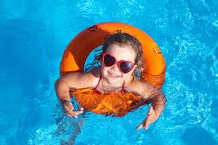
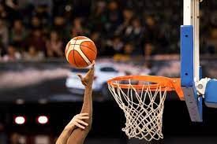

Swimming is a great full-body workout that improves cardiovascular health, builds strength, and boosts flexibility. It's low-impact, making it gentle on joints, and helps reduce stress while improving mental well-being. Swimming also burns calories, aids in weight management, and enhances overall fitness. Plus, it's fun and can be done by people of all ages and fitness levels.
Playing basketball improves physical fitness by boosting cardiovascular health, strength, and coordination. It helps burn calories, manage weight, and build endurance. The sport also promotes teamwork, communication, and stress relief, while offering a fun way to socialize and connect with others. Whether for fitness or fun, basketball provides a well-rounded workout and mental benefits.
Playing football improves fitness by boosting strength, endurance, and cardiovascular health. It enhances coordination, teamwork, and communication skills. Football helps build discipline, reduces stress, and promotes social interaction. It’s also a great way to stay active, have fun, and develop leadership qualities while enjoying friendly competition.